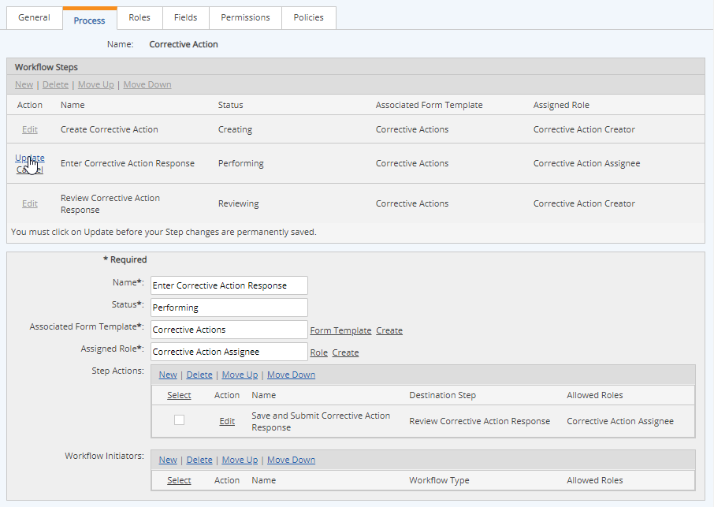
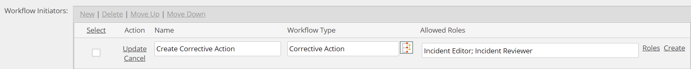

On the Process tab of the Workflow Type, you can create or edit the workflow process. For an existing workflow, the steps are listed in a table at the top. A diagram of the process is shown below.
To edit a step:
Select the step by clicking on its row in the table to display the step properties.
The following actions are allowed:
For definitions of these fields, see Create New Workflow Type

Rename the step:
Edit the step name directly.
Change the Status for the step:
This is the status that the workflow will display while this step is active. Enter any appropriate text value.
Change the associated Form Template:
Click Form Template to select an existing form template from a pop-up window. Or click Create to create a new form template for the step. You can select custom fields to include on the form or create custom fields on the fly. See Form Templates.
Change the assigned Role:
Click Role to select a role from the pop-up menu, or click Create to create a new role. See Workflow Roles.
If you change the assigned Role for the step, you will need to edit the Permissions to give the Role the appropriate permissions on the step.
Add/edit Step Action:
To add a new Step Action, click Add. Name the action appropriately.
Select a Destination Step for the action.
Select the Role allowed to execute this action. Click Role to select a role from the pop-up menu, or click Create to create a new role. See Workflow Roles.
To edit a Step Action, you may edit the name directly, choose a different destination step for the action, or select a different Role allowed to execute the action.
To delete a Step Action, select the checkbox and click Delete.
Add/edit Workflow Initiatiors:
Workflow Initiators are used to initiate another child workflow from the selected workflow step.
Enter the name of the action that initiates the child workflow. Choose the workflow that will be initiated by this action. Choose the Role allowed to initiate the new workflow, or create a new Role.

To edit a Workflow Initiator, you may edit the name directly, choose a different workflow to initiate, or select a different Role allowed to initiate the new workflow.
To delete a Workflow Initiator, select the checkbox and click Delete.